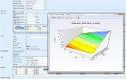

Apprendre


Qu'est-ce que OCaml ? OCaml est un langage générique de programmation, de puissance industrielle, qui met l'accent sur l'expressivité et la sûreté. C'est la technologie de choix pour les entreprises où la qualité du code, sa performance et sa maintenabilité sont critiques. La communauté est très active, et a développé un riche écosystème de bibliothèques. Lire plus.
Exemples de code
(* Si [l] est la liste [e1;…;eN] *)
(* Additionner tous les éléments: *)
List.fold_left ( +. ) 0. l
(* Multiplier tous les éléments: *)
List.fold_left ( *. ) 1. l
(* Concaténer la liste dans une chaîne: *)
List.fold_left ( && ) true l
(* Inverser la liste : [eN;…;e1] *)
List.fold_left (fun r e -> e :: r) [] l
Tutoriaux & FAQ
Livres anglais et français


De nombreux livres sont disponibles sur OCaml, dont deux publiés en 2013.
Présentations & Videos
Un exposé de Xavier Leroy présentant les dernières nouveautés d'OCaml à la réunion annuelle des développeurs OCaml 2014 à Gothenburg, Suède (en PDF, Vidéo).
Un cours invité donné par Yaron Minsky, de Jane Street, sur comment programmer efficacement en ML. L'exposé a été donné à Harvard, pendant le cours d'introduction à l'informatique, CS51, où les étudiants passent un semestre à programmer en OCaml.
Utilisateurs industriels
 Jane Street est une société
d'arbitrage financier qui met l'accent sur la résolution
de problèmes technologiques et collaboratifs. Presque tous
leurs systèmes sont écrits en OCaml : du code de recherche
statistique qui opère sur des téra-octects de données aux
outils de gestion système, comme l'infrastructure
de transactions en temps réel. Et la plupart de ces systèmes
sont déployés à l'échelle réelle : dans une journée
classique, leurs transactions représentent entre 1% et 2%
du volume du marché américain.
Jane Street est une société
d'arbitrage financier qui met l'accent sur la résolution
de problèmes technologiques et collaboratifs. Presque tous
leurs systèmes sont écrits en OCaml : du code de recherche
statistique qui opère sur des téra-octects de données aux
outils de gestion système, comme l'infrastructure
de transactions en temps réel. Et la plupart de ces systèmes
sont déployés à l'échelle réelle : dans une journée
classique, leurs transactions représentent entre 1% et 2%
du volume du marché américain.
 Pour gérer
son énorme base de code PHP, Facebook a développé
pfff,
un ensemble d'outils et d'APIs pour effectuer des analyses
statiques, des analyses dynamiques, de la visualisation de
code, naviguer dans le code, et des transformations
source-à-source préservant le style. Facebook a aussi
conçu Hack, un nouveau langage de programmation
statiquement typé pour HHVM, une machine PHP très rapide.
Voir
l'exposé à CUFP de Julien Verlaguet et
sa présentation.
Pour gérer
son énorme base de code PHP, Facebook a développé
pfff,
un ensemble d'outils et d'APIs pour effectuer des analyses
statiques, des analyses dynamiques, de la visualisation de
code, naviguer dans le code, et des transformations
source-à-source préservant le style. Facebook a aussi
conçu Hack, un nouveau langage de programmation
statiquement typé pour HHVM, une machine PHP très rapide.
Voir
l'exposé à CUFP de Julien Verlaguet et
sa présentation.
Les réussites d'OCaml
 Unison est un synchroniseur de fichiers innovant, basé
sur
la plus récente recherche. Il tolère les pannes
et fonctionne aussi bien sous Windows que sous la plupart
des variantes d'Unix, en incluant MacOSX.
OCaml a permis à ses auteurs d'
« organiser une base de code importante et complexe ».
Unison est un synchroniseur de fichiers innovant, basé
sur
la plus récente recherche. Il tolère les pannes
et fonctionne aussi bien sous Windows que sous la plupart
des variantes d'Unix, en incluant MacOSX.
OCaml a permis à ses auteurs d'
« organiser une base de code importante et complexe ».
 Développé par LexiFi, le "Modeling Language for Finance" (MLFi) est le premier langage formel qui décrit précisément les produits financiers les plus sophistiqués. MLFi est développé comme un extension du langage OCaml.
{kind=link}
FFTW
est une bibliothèque pour effectuer la transformée de Fourier,
développée au MIT, qui rivalise avec les meilleures
bibliothèques propriétaires, tout en restant
plateforme indépendante.
Le code est généré par genfft,
développé en OCaml, qui
« découvre » des algorithmes qui étaient inconnus
auparavant.
Elle a été couronnée
par le prix J. H. Wilkinson du logiciel numérique,
qui prime les développements qui excèlent dans toutes les phases
de la préparation d'un logiciel numérique de haute qualité.